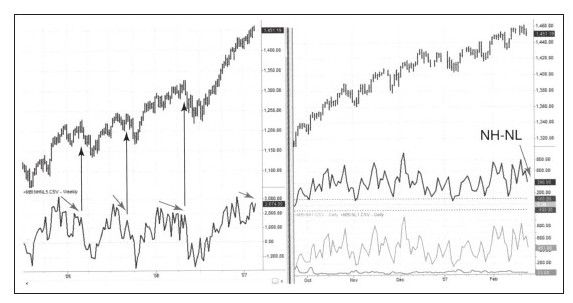
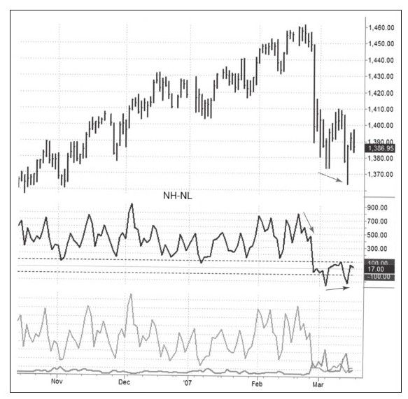

无论交易个股还是股指期货，都应该有个指标可以确认市场趋势并对即将到来的反转发出警示。当这个指标显示市场即将反转时，你要特别留意持有的股票发出的技术信号。
我相信新高新低指标（NH-NL指标）是最好的股票市场领先指标[1]。新高——股价创出过去52周的新高点是多头力量的象征，新低——股价跌到过去52周的新低点是空头力量的象征。新高和新低之间的相互作用为判断市场趋势强弱提供了重要信息。
NH-NL指标很容易计算，日线上创出新高的股票数量减去创出新低的股票数量就可以得出当日的NH-NL值，把过去5天的NH-NL值相加就可以得到当周的NH-NL值。
NH-NL指标为正表示牛市是主导行情，反之亦然。当指标与股价同涨同跌时，就是在确认趋势，这个指标的背离有助于识别市场的顶底。如果市场价格创出新高，同时NH-NL指标也创出新高，表明牛市主导的行情还可能会延续。如果价格上涨但指标却下跌，表明上涨趋势遇到了麻烦，同样的逻辑也适用于下跌趋势。
我喜欢在分屏模式下看NH-NL指标，左边是周线图右边是日线图。周线图的NH-NL指标用一条线显示，日线图的NH-NL指标用两条线单独显示新高和新低，新高线用绿色，新低线用红线。图6-18显示了2007年2月份价格及指标的情况。

当NH-NL指标发出卖出信号时市场响起警钟，随后的走势如图6-19所示。如果各类基于不同原理的指标显示相同的信号，会加强各自的信息含义。

尽管在加仓或减仓时机上NH-NL指标不如MACD或强力指标那么精确，但因为它能帮助我们识别大势，所以对我们交易个股非常有用。
[1]因为新高新低指标太过重要，所以我们每天都会把指标信息列在www.Spiketrade.com上。